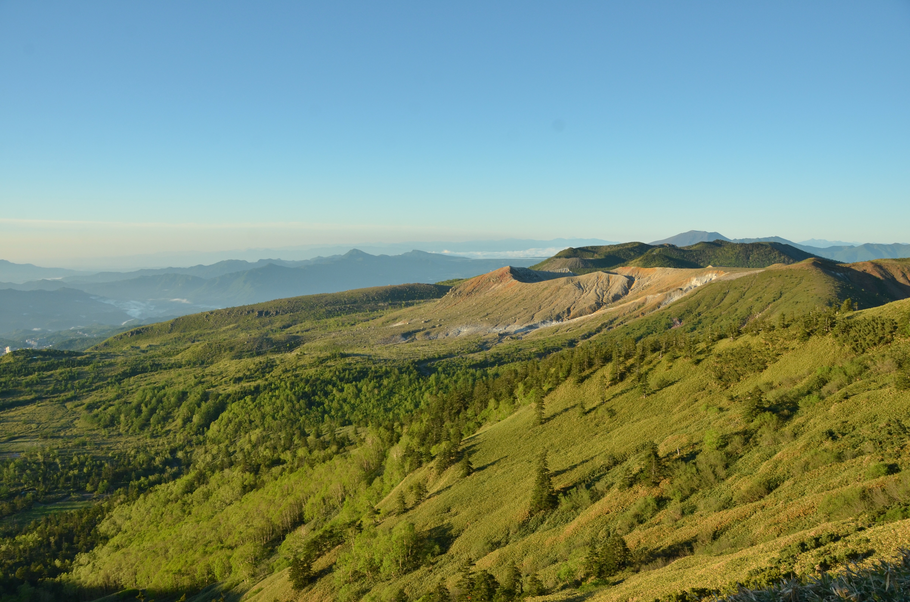

Takahiro Matsunaga
Hello, I am now pursuing Ph.D degree.
Department of Civil Engineering, The University of Tokyo
Behavior in Networks (BinN) Studies Unit.
matsunaga[at]bin.t.u-tokyo.ac.jp
7-3-1 Hongo, Bunkyo-ku, Tokyo 113-8656, Japan
CV | Google Scholar | LinkedIn | Note
